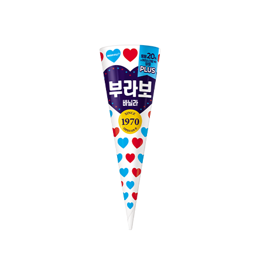

모든 처음에는
설렘이 있다.
1970대한민국 최초의 콘 아이스크림.
부라보콘은 1970년 출시되어 꾸준한 사랑을 받아왔습니다.

1970년부터 이어진 클래식.
오늘도, 마음을 담은 한 입.
대한민국 최초의 콘 아이스크림.
부라보콘은 1970년 출시되어 꾸준한 사랑을 받아왔습니다.
55년간 쌓인 달콤한 순간. 한 줄로 세우면 지구를 27바퀴 이상 돌 수 있는 양입니다.
* 누적 판매량 및 출시 55년은 2025년 기준국내 최초 Half-Cutting 공법 적용.
보다 깔끔하고 간편하게 즐기는 일상까지 생각했습니다.
세 개의 점을 눌러 풍미를 발견해 보세요.
바닐라빈을 사용해 더욱 깊고 진한 풍미를 완성했습니다.
익숙한 CM송과 함께, 전 세대의 추억 속에 자리한 이름.
2023–2026년 4년 연속 K-BPI 1위
2025 대한민국브랜드대상 최우수상 · 국무총리상